P2: Storyboards and Design Sketches
Scenarios
Scenario 1 - Choosing a dining hall
Sarah is a junior economics and psychology double major who is working hard to complete a busy week of classes and midterms before spring break. Today, she took an ECON 201 exam in the morning and had a paper due at 5pm that she needed to finish writing. She woke up too late to eat breakfast this morning, and only grabbed a peanut butter and jelly sandwich for lunch to work on her essay. By 5pm after turning in her assignment in Pendleton, she needed to refuel after an exhausting day. As a vegetarian, she wants a hearty and filling meal. Except for Pom, the rest of the dining halls do not consistent offer great vegan and vegetarian choices, so she opens up Battle of the Plates and checks the dining hall menus to see which location has the tastiest options for her. She filters the menu only to show the vegetarian options. She sees that Stone D has the most options for her, which includes nachos, her favorite dining hall food item. With an empty stomach, she walks over to Stone D to enjoy a hearty meal.
Scenario 2 - Changing diets, challenging friends, learning about nutrition, monitoring nutrients
Wendy is a sophomore biochemistry major who eats whatever she wants in the dining hall. Because she has a fast metabolism, she has never thought about the consequences of eating an unbalanced diet. She loves to load her plate up with her favorite foods such as pasta and steak, does not eat vegetables at all, and gets ice cream and cake every lunch and dinner. After hearing her friends talk about how metabolism slows down at age 25, she feels inspired to lead a healthier life and become conscious about what she consumes. She even considers becoming a vegetarian to ensure that her meals are filled with enough nutrients. She wants to attain a healthy lifestyle and feel good about herself, but lacks information about general nutritional facts and has no idea where to start. She pulls up “Battle of the Plates Eand goes to the Info section that contains facts about eating a balanced diet, switching to a vegetarian diet, and even different meal substitutes for food items she eats on a daily basis. With that new information, she decides to try closely monitoring the foods she eats by logging her food servings in the app and visually see which food groups she needs to eat more of. She stumbles upon the Challenge feature and sees that one of her close friends Rebecca is also on the app. She thinks she will do a better job transitioning into a vegetarian diet if she does it with a friend, so she challenges Rebecca to eat healthfully for a week straight.
Scenario 3 - Monitoring nutrient
Peter, a newly vegetarian college student, is living in an off campus apartment. He has been trying to keep track of his meals with the use of “MyFitnessPal, Ea calorie counter used for weight loss. He has not been regularly submitting and updating his daily progress since the app’s features are tedious and do not motivate him to continue. The app’s focus on weight loss is a turn off since Peter is more concerned about the lack of protein and calcium in his diet. Instead, using the app becomes a lonely experience, since he finds it difficult to continue his new diet without some friendly support. Peter begins to eat unhealthy foods like ice cream and chocolate. Then one day, as he is scrolling through the App Store, he sees “Battle of the Plates, Ean alternative app that allows people to challenge others in a bout of nutritional eating. He downloads the app and signs in with Facebook. Peter is pleasantly surprised to discover that some of his friends and classmates already use it. He uses the app’s messenger feature and decides to challenge a friend. The winner will be the person who is able to maintain balanced, nutritious meals hitting the most food groups the longest. With renewed vigor, Peter sets out to defeat his friend and begins recording his meals. During one dinner, he checks his daily progress and realizes he is missing protein and grabs some chickpeas. After dinner, he records the meal and checks his friend’s progress. Maintaining a new diet has become less daunting and lonesome.
Scenario 4 - Focused on group monitoring
Erika and her friends Susan and Heidi want to be more healthy, but being body-positive Wellesley students, they don’t want to do it by focusing on their weight or on calories. Instead, they want to focus on getting the right amount of nutrients and servings from each food groups. Because they’re all busy college students, they don’t think they can be motivated enough to do it alone, so they want to make it a competition amongst themselves in order to keep each other accountable and motivate each other. They initially keep track of their meals on their own and then update the information on a shared Google Sheets document. Because of how tedious the process is, they start looking for alternatives and happen upon Battle of the Plates. Although the information and personal recording attributes are useful, they mostly like the idea of being able to track their nutritions and immediately share it with their group. Of the two main features, meeting a goal set by the group with 5 hearts, or chances, to miss the goal and seeing who best hits the daily intake, they decide to choose the first option with a group goal of meeting 90% of the daily nutrition and food group intake goals. They also set it so that this challenge ends when all but one challenger hits 0 hearts. Erika ends up winning with 3 hearts remaining. They decide to start a new challenge, and they keep going with the challenges, with a new wager with each new challenge.
Preliminary Design
Design 1: Simple & Sweet
The simple design has a minimalistic design and includes only a few features compared to the feature rich design to simplify its interface.
Click to Enlarge:
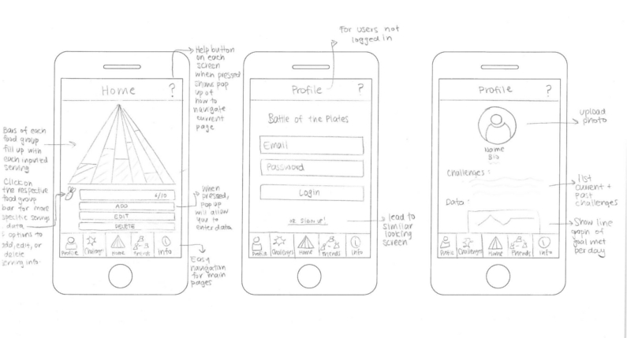
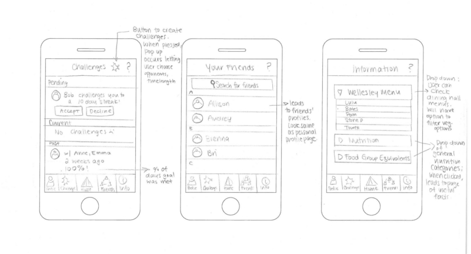
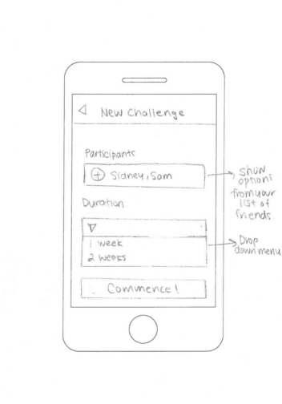
Design 2: Feature Rich
The feature rich includes more in-depth features compared to the simple design, and contains more screens and content to reflect this. For example, users can sign up and log in with more social media accounts, such as Facebook, Twitter, and Google. The profiles contain more information about the user, such as their heart count, and users can directly challenge or message them. This design offers more customizable challenges, offers more indepth information about the user's intake, includes a message feature, and allows the user to set personal goals for themself. This design not only focuses on group growth, but also personal growth.
Click to Enlarge:
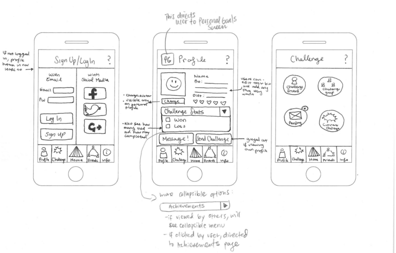
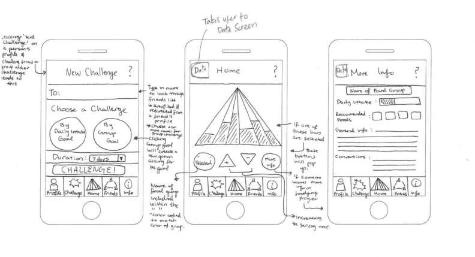
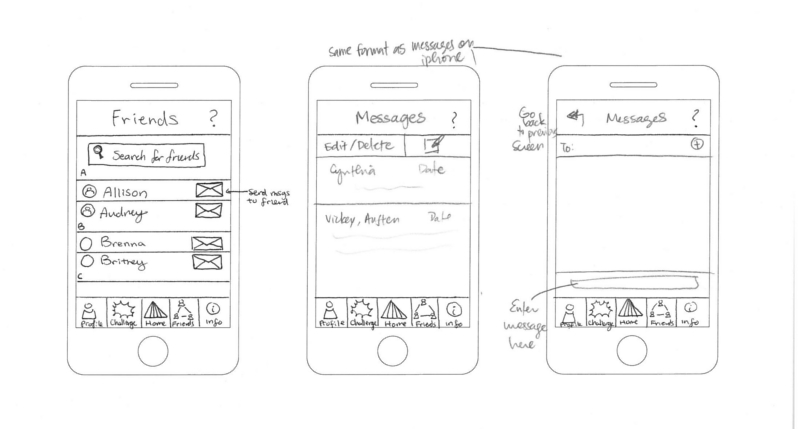
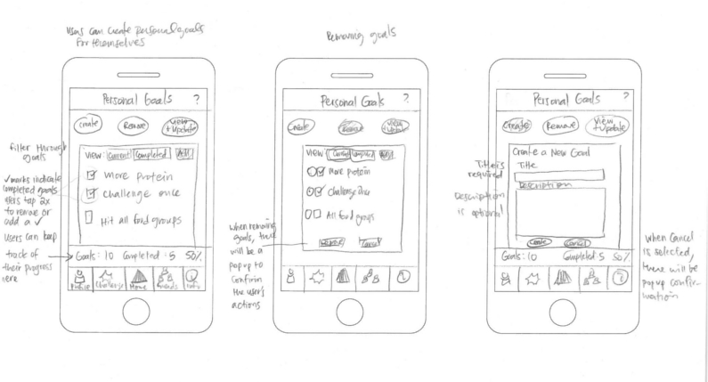
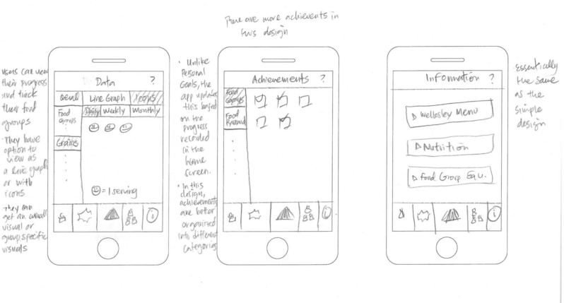
Storyboards
Simple and Sweet Design
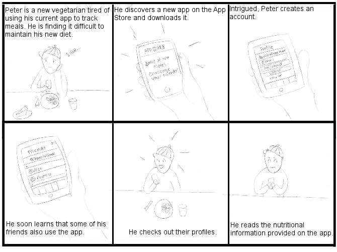
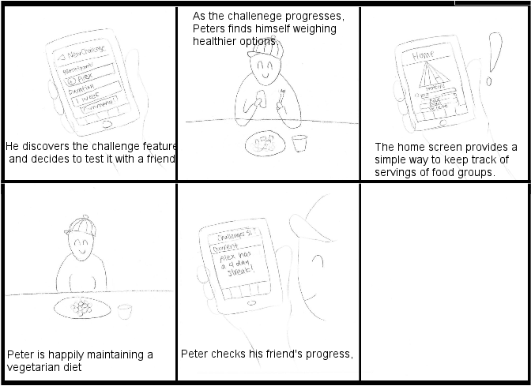
App Focused Storyboard
{kind=link}
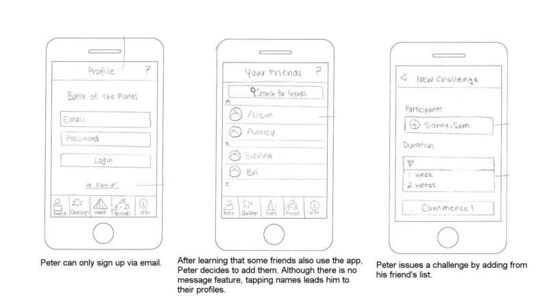
{kind=link}
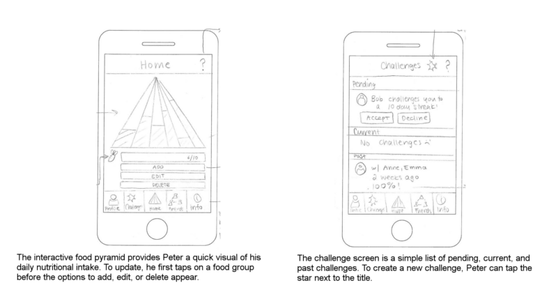
Feature Rich Design
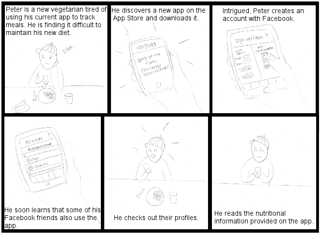
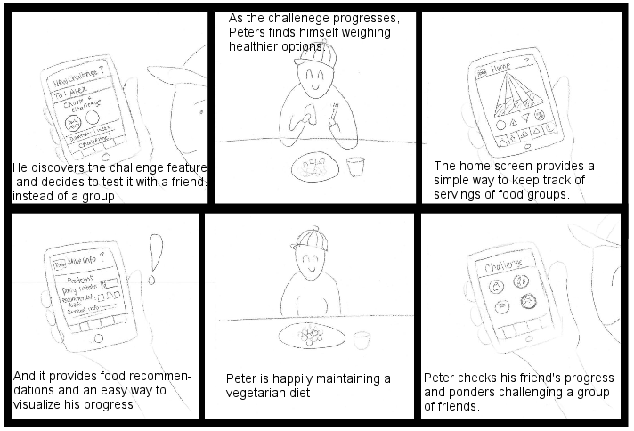
App Focused Storyboard
{kind=link}
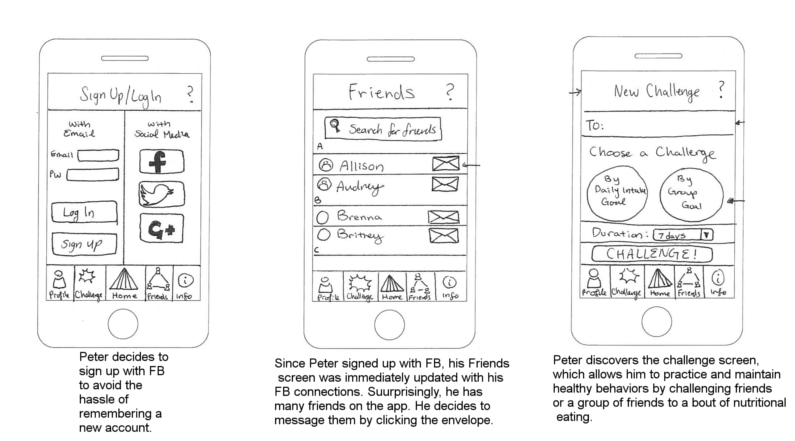
{kind=link}
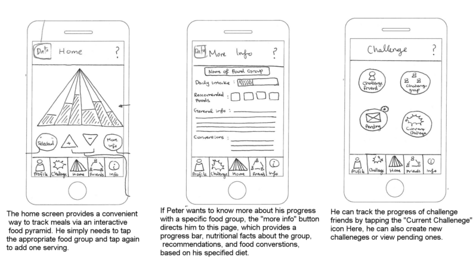